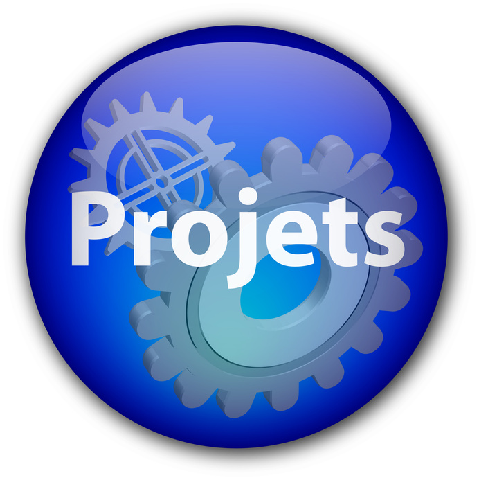

Accueil
Profil
BTS SIO
Ecole/Stages
Realisations
Projets
Veille Technologique
Contact
PROJETS
Mise en place d'une solution d'accès distant
sécurisé avec RDP, Active Directory et PfSense

Centralisation des accès et gestion des tickets
IT via Active Directory et GLPI